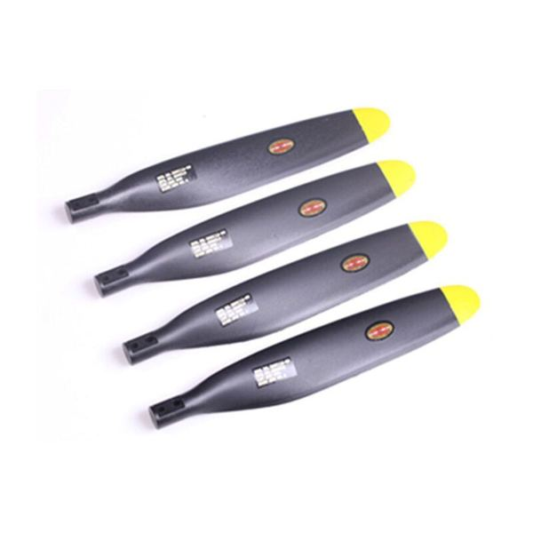
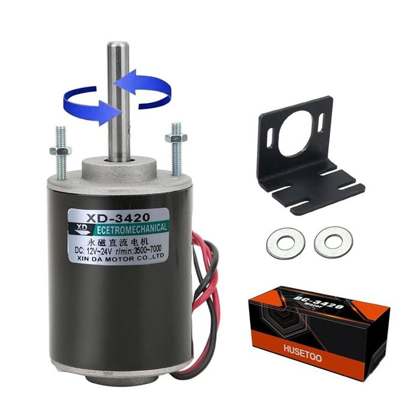
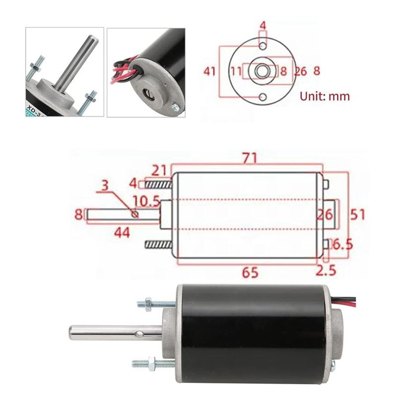
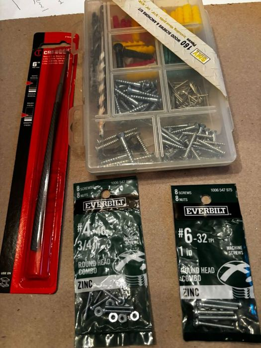
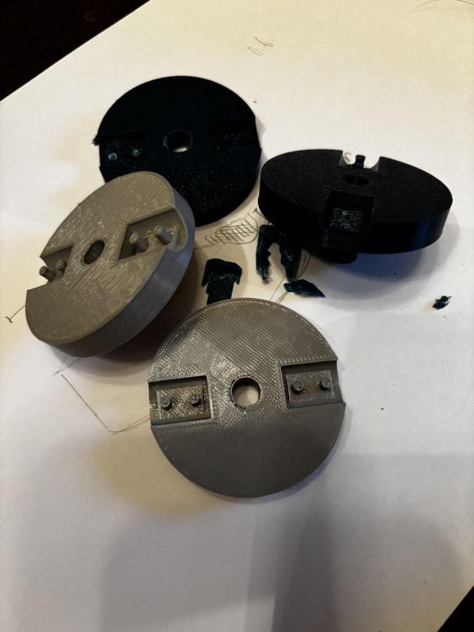
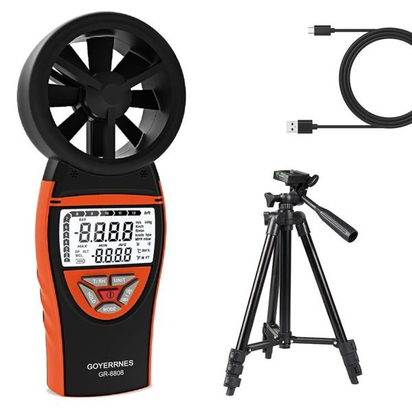

Hub design 1
CAD pictures coming- Shape
- to add
- Size
- to add
- Material
- to add
- Motor link
- to add
- Stability
- to add
- Weight
- to add
- Result
- to add
For our research project we test a turbine with 2, 3, 4 and 5 blades to find out which one makes the most power. This page shows how we picked our parts.
We picked the propeller first, then looked for a motor that matches it. The motor has to be strong enough to hold the propeller, but not so hard to turn that the wind can't spin it. Torque (the twisting force) is a big part of that choice.
FMS Propeller, 14 x 8, 4-Blade, 1400mm F4U
It was on the materials list from our professor. We cut it apart and use the blades one at a time.

We tried a lot of motors before we found one that worked. Here is what happened.
A gearbox makes a motor spin slower but stronger. We need the opposite, because the wind is what turns our motor. Gears also rub together and waste energy.
We kept one idea: a nut on a threaded shaft to hold the propeller on.
It has a flat spot on its shaft, which stops the hub from slipping. But it needs about 300 spins per minute just to make 1 volt, and our turbine will probably spin slower than 500. It was also stiff to turn.
It is made for classroom turbines and spins easily. But its shaft is only 2 mm thin, and our propeller is big and heavy. The shaft would bend.
We switched to a Vornado Model 80. It blows up to about 8.6 m/s (19 mph), roughly 50% stronger than a normal box fan. That helps, but it did not fix everything.
It has a thick 17 mm shaft and makes lots of voltage. But it costs $313.95 and weighs about 20 pounds. That is way too big for a tabletop project.
It costs $22.99, it is small, and its shaft is 8 mm thick, almost twice as thick as the 775's. The trade-off is that it needs more spins per minute to make voltage. We picked it because a strong shaft matters most for our heavy propeller.
We still need to measure exactly how much voltage it makes. Our notes say 508 spins per volt, but the seller's listing points to about 292.


A shorter bar is better for a slow turbine. The dashed line is 500 spins per minute, about as fast as we expect ours to go.
Striped bars are the two numbers we have not sorted out yet.
The hub connects the blades to the motor. We designed it in CAD and went through several versions, talking about the good and bad of each one: shape, size, material, how it attaches to the motor shaft, and how stable it is. We measured every part of our materials so the hub would fit the motor shaft and the blades just right.

Pictures of our CAD designs and details for each version will be added below as we write them up.
Testing meant trying, failing and fixing. Here are some of our 3D-printed hubs that did not work.

Each failed print taught us something that went into the next hub design.
This is the first 15 seconds of our first successful run.
Next, for each blade count we will record voltage, current and wind speed, then figure out how much power each one makes.
